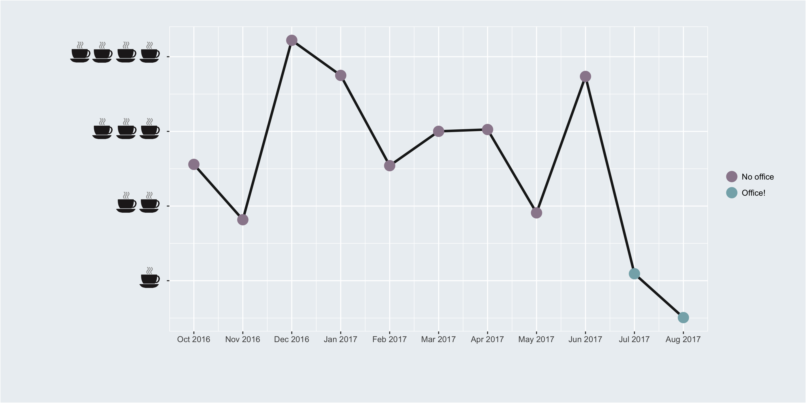

Erika Braithwaite, PhD | Co-Founder
I obtained my bachelors and master’s in psychology and then completed a PhD in Epidemiology at McGill University. My journey from the social sciences to the biomedical field has helped me gain a host of expertise related to study design, such as clinical trials, statistical modeling techniques drawn from causal inference and econometrics.
The common thread to all the fun things I get to do in my everyday? Data. I’m currently pursuing the postdoctoral fellowship at McGill University and I’m also a co-founder of a Precision Analytics.
When I’m not playing with numbers (which is rare), I’m googling pictures of dogs, doing gymnastics or playing with makeup (click here to see where makeup and data collide).
Kathryn Morrison, PhD | Co-Founder
My training is in biostatistics, epidemiology, and geographic information science. I finished my PhD in February 2017. Methodologically, I’m interested in predictive analytics, Bayesian inference, spatio-temporal modelling, and modern approaches to data visualization. I currently split my time as the co-founder of Precision Analytics, as a researcher at McGill University with Dr. Robert Platt, and as a research analyst at the University of Montreal with Dr. Kate Zinszer.
As the famous* John Tukey said, the best thing about being a statistician is that you get to play in everyone’s backyard. I love the range of applications that being a methodologist has allowed me to dabble in. I’ve worked with data from environmental health, infectious disease, pharmacoepidemiology, social sciences, and biotechnology.
I’m an avid R programmer and have benefited greatly from the online, open-source R community. I strongly believe in reproducible research practices and try to make my work as accessible as possible. I also love knitting, yoga, podcasts, and dogs. *Yes, there are famous statisticians.
Deepa Jahagirdar, Msc | Research Analyst
I am nearing the completion of my PhD in Epidemiology at McGill University where I received training and experience in statistical methods, analysis of large quantities of spatiotemporal data and epidemiologic methods. In all my work, I love to distill complexity into an elegant story. This conviction drives my interest in data visualization, statistical methods, predictive modelling, econometric methods to identify causal effects, and everything from visual and descriptive exploration to machine learning algorithms to make sense of big data. It also drives my strong interest as a writer, in teaching and, ultimately, in finding the beauty in chaos.
Testing the figure
